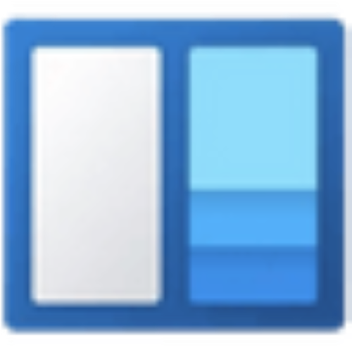

GO FULLSCREEN
Open
Open All
Rename
Pin to taskbar
Pin
Unpin
Open new
Close
Fullscreen
Enable context menu
Change wallpaper
Lock taskbar
Lock the taskbah
Open
Go to directory
Open in new explorer
Open as HTML
System Configuration

50
Restart
Shut Down
Start Menu
Pinned
Recommended
All Apps
Settings
Personalization
System
About
Personalization
Background
Colors
Light
Dark
Taskbar
Transparency:
90%
Align Left
Align Center
System
General
Reset Program Names
Reset All Data
About
Dannz OS Simulation
Version 1.0
Notifications
Sun
Mon
Tue
Wed
Thu
Fri
Sat